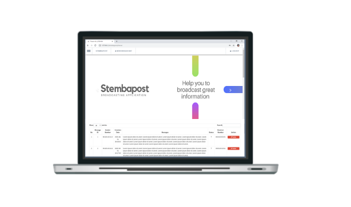
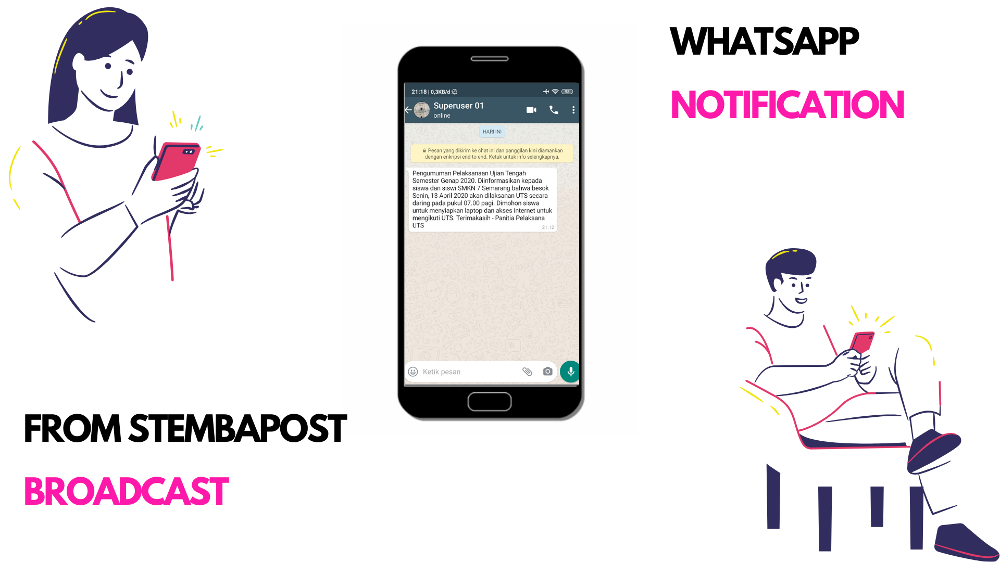

ABOUT
Stembapost Website Application
Stembapost merupakan aplikasi lokal buatan salah satu team beranggotakan 2 anggota girls , siswa SMKN 7 Semarang(STM Prmbangunan). Aplikasi ini merupakan aplikasi lokal berbasis web yang dibangun dengan interface Framework CodeIgniter, Bootstrap 3, jQuery, HTML 5 dan CSS-Saas. Untuk backend nya digunakan DBMS MySQL(PHPMyAdmin) dan Restfull API Node JS sebagai connector dengan API Whatsapp.
Cara Kerja Aplikasi ini ialah user akan membuat pesan Broadcast dari laman website stembapost dengan memasukkan nomor dan pesan lalu klik send button. Selanjutnya pesan tersebut akan otomatis terbroadcast langsung ke nomor Whatsapp yang dituju. 
Kelebihan dan Keunggulan Aplikasi Stembapost
| U | F | E |
| User-friendly | Free | Easy to use |